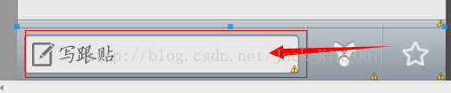

高仿新闻教程新闻内容的编辑（4）
这一篇内容主要是通过 新闻列表 点击 到达 新闻内容，因为现在并没有加载网络数据，所以先用假数据做一下，在后面我将用json数据做出来。
UI大致为
我们先将UI做出来， 可以发现UI分成三部分 一个是标题一个是新闻 内容 另一个是 下方的的评论 内容， 因为I在上一节我已经讲了 UI的美化在这一节 我就不叙述着一些，毕竟篇幅有限。大家可以将就一下看看源码 重要部分我会讲解一下
我们先看标题栏的内容的
<RelativeLayout android:id="@+id/newsdetails_titlebar_layout" android:layout_width="fill_parent" android:layout_height="wrap_content" android:background="@drawable/titlebar_background" > <Button android:id="@+id/newsdetails_titlebar_previous" android:layout_width="33dp" android:layout_height="33dp" android:layout_marginTop="7.0dip" android:layout_marginLeft="5.0dip" android:layout_alignParentLeft="true" android:background="@drawable/newsdetails_title_previous_btn_selector" android:textSize="14.0sp" android:textStyle="bold" /> <TextView android:id="@+id/newsdetails_titlebar_title" android:layout_width="wrap_content" android:layout_height="wrap_content" android:layout_marginLeft="15.0dip" android:layout_marginTop="13.0dip" android:layout_toRightOf="@id/newsdetails_titlebar_previous" android:textSize="18.0sp" android:textColor="@android:color/white" android:text="国内" /> <Button android:id="@+id/newsdetails_titlebar_next" android:layout_width="35dp" android:layout_height="35dp" android:layout_marginTop="8.0dip" android:layout_marginRight="5.0dip" android:layout_alignParentRight="true" android:background="@drawable/newsdetails_title_next_btn_selector" /> <Button android:id="@+id/newsdetails_titlebar_comments" android:layout_width="65dp" android:layout_height="40dp" android:layout_alignParentRight="true" android:layout_marginRight="50.0dip" android:layout_marginTop="3.0dip" android:background="@drawable/newsdetails_titlebar_comments_background" android:textColor="@android:color/white" android:text="0跟帖" /> </RelativeLayout>
标题栏是一个相对布局，背景设置了一张带有阴影的.9图片，高度适应 宽度填充 三个button背景都设置了 select的点击切换背景
中间就是一个scollview
中间内容的代码
<LinearLayout android:id="@+id/news_body_layout" android:layout_width="fill_parent" android:layout_height="fill_parent" android:layout_marginTop="-12.0dip" android:layout_marginBottom="40.0dip" android:layout_below="@id/newsdetails_titlebar_layout" > <ScrollView android:id="@+id/news_body_scrollview" android:layout_width="fill_parent" android:layout_height="fill_parent" android:background="#FFE7E7E7" android:fadingEdge="none" > <LinearLayout android:layout_width="fill_parent" android:layout_height="wrap_content" android:orientation="vertical"> <LinearLayout android:layout_width="fill_parent" android:layout_height="wrap_content" android:orientation="vertical"> <TextView android:id="@+id/news_body_title" android:layout_width="fill_parent" android:layout_height="wrap_content" android:layout_marginLeft="12.0dip" android:layout_marginTop="12.0dip" android:layout_marginRight="12.0dip" android:textColor="#FF272727" android:textSize="18.0dip" android:textStyle="bold" /> <TextView android:id="@+id/news_body_ptime_source" android:layout_width="fill_parent" android:layout_height="wrap_content" android:layout_marginLeft="12.0dip" android:layout_marginTop="9.0dip" android:layout_marginRight="12.0dip" android:textColor="#FF888888" android:textSize="12.0sp" /> <ImageView android:id="@+id/news_body_separator_line" android:layout_width="fill_parent" android:layout_height="wrap_content" android:layout_marginTop="8.0dip" android:visibility="visible" android:src="@drawable/list_separator_line" /> <ProgressBar android:id="@+id/news_body_details_loading" android:layout_width="16.0dip" android:layout_height="16.0dip" android:layout_marginLeft="152.0dip" android:layout_marginTop="10.0dip" android:layout_centerHorizontal="true" android:layout_centerVertical="true" android:visibility="gone" android:clickable="false" style="?android:attr/progressBarStyleLarge" /> </LinearLayout> <TextView android:id="@+id/news_body_details" android:layout_width="wrap_content" android:layout_height="wrap_content" android:layout_marginTop="5.0dip" android:textColor="#ff000000" /> </LinearLayout> </ScrollView> </LinearLayout>其中fadingEdgelength这就是控制渐变区域的宽度 唯一要重点说的就是 加入了一个 ProgressBar 当网络不好的时候 就会出现
下方的回复视图
<!-- 回复视图布局 --> <LinearLayout android:id="@+id/news_reply_layout" android:layout_width="fill_parent" android:layout_height="wrap_content" android:layout_alignParentBottom="true" android:layout_centerHorizontal="true" android:gravity="center" android:layout_gravity="bottom" android:orientation="horizontal" android:background="@drawable/news_reply_layout_background" android:visibility="visible" > <LinearLayout android:id="@+id/news_reply_edit_layout" android:layout_width="wrap_content" android:layout_height="wrap_content" android:gravity="center" android:layout_gravity="center" android:orientation="horizontal" android:visibility="gone" android:layout_marginTop="10.0dip" android:layout_marginBottom="5.0dip"> <EditText android:id="@+id/news_reply_edittext" android:layout_width="230.0dip" android:layout_height="wrap_content" android:layout_marginLeft="5.0dip" android:maxLength="500" android:text="非常好的新闻"/> <ImageView android:layout_width="wrap_content" android:layout_height="wrap_content" android:layout_marginLeft="10.0dip" android:layout_marginRight="10.0dip" android:src="@drawable/news_reply_layout_divider" /> <Button android:id="@+id/news_reply_post" android:layout_width="wrap_content" android:layout_height="wrap_content" android:background="@drawable/news_reply_post_btn_selector" android:layout_marginRight="10.0dip" android:text="发表" /> </LinearLayout> <LinearLayout android:id="@+id/news_reply_img_layout" android:layout_width="wrap_content" android:layout_height="wrap_content" android:gravity="center" android:layout_gravity="center" android:orientation="horizontal" android:layout_marginTop="3.0dip"> <ImageButton android:id="@+id/news_reply_img_btn" android:layout_width="wrap_content" android:layout_height="wrap_content" android:background="#00000000" android:layout_marginLeft="5.0dip" android:src="@drawable/news_reply_img_btn_background" /> <ImageView android:layout_width="wrap_content" android:layout_height="wrap_content" android:layout_marginLeft="5.0dip" android:layout_marginRight="2.0dip" android:src="@drawable/news_reply_layout_divider" /> <ImageButton android:id="@+id/news_share_btn" android:background="#00000000" android:layout_width="wrap_content" android:layout_height="wrap_content" android:src="@drawable/news_share_btn_selector" /> <ImageView android:layout_width="wrap_content" android:layout_height="wrap_content" android:layout_marginLeft="2.0dip" android:layout_marginRight="2.0dip" android:src="@drawable/news_reply_layout_divider" /> <ImageButton android:id="@+id/news_collect_btn" android:background="#00000000" android:layout_width="wrap_content" android:layout_height="wrap_content" android:src="@drawable/news_collect_btn_selector" /> </LinearLayout> </LinearLayout>其实这样的布局 整个就是一个 图片 点击时候会切换 一个隐藏 一个出现，
然后再主文件中 队listview添加点击事件处理，因为这里不需要传递数据 都是死数据 所以只需要跳转
newslist.setOnItemClickListener(new OnItemClickListener()
{
@Override
public void onItemClick(AdapterView<?> parent, View view, int position, long id)
{
Intent intent = new Intent(MainActivity.this, NewsDetailsActivity.class);
startActivity(intent);
}
});NewsDetailsActivity的代码 比较简单了 就是填充了一些假数据
package com.example.SundayNews;
import android.app.Activity;
import android.os.Bundle;
import android.text.Html;
import android.widget.TextView;
public class NewsDetailsActivity extends Activity
{
@Override
public void onCreate(Bundle savedInstanceState)
{
super.onCreate(savedInstanceState);
setContentView(R.layout.newsdetails);
TextView newsTitle = (TextView)findViewById(R.id.news_body_title);
newsTitle.setText("新闻客户端教程发布啦");
TextView newsPtimeAndSource = (TextView)findViewById(R.id.news_body_ptime_source);
newsPtimeAndSource.setText("来源：工作室 2014-03-12 10:21:22");
TextView newsDetails = (TextView)findViewById(R.id.news_body_details);
newsDetails.setText(Html.fromHtml(NEWS));
}
public final String NEWS = "<p> 环比全部停涨首次出现</p>\r\n<p> 数据显示，在新建商品住宅方面，2012年1月全国70个大中城市，价格环比下降的城市有48个，持平的城市有22个，没有一个城市出现上涨。从房价价格指数公布来看，首次出现了新建商品住宅环比全部停涨的现象。</p>\r\n<p> 从同比看，70个大中城市中，价格下降的城市有15个，比去年12月份增加6个。1月份，同比涨幅回落的城市有50个，涨幅均未超过3.9%。</p>\r\n<p> 二手住宅</p>\r\n<p> 仅有5个城市环比上涨</p>\r\n<p> 从二手房看,与上月相比，70个大中城市中，价格下降的城市有54个，持平的城市有11个。与去年12月份相比，1月份环比价格下降的城市增加了3个。环比上涨的仅5个城市：分别为贵阳、济宁、襄阳、韶关、遵义，均仅上涨0.1%。同比看，70个大中城市中，价格下降的城市有37个，比去年12月份增加了8个。1月份，同比涨幅回落的城市有29个，涨幅均未超过3.5%。</p>\r\n<p> 北京情况</p>\r\n<p> 二手房环比同比均下跌</p>\r\n<p> 数据显示，北京二手房价格不管是环比还是同比，都在下跌，且下跌幅度均有所加大。</p>\r\n<p> 在环比方面，自去年8月份出现停涨后，二手房价格环比开始下跌，且此后每个月的下跌幅度在不断加大，到2012年1月份，其环比下跌幅度已达到0.9%。而在同比方面，2012年1月份下跌3.1%，创下最大跌幅。</p>\r\n<p> 北京新建住宅价格指数2010年5月时同比涨幅为22%，而到了2012年1月同比涨幅仅为0.1%。新建商品房价格指数同比涨幅也是连续下跌，下降幅度也比较大，去年年底同比涨幅为1.3%，而到了今年1月份，则同比涨幅下跌为0.1%。在环比方面，继2011年10月首次出现下跌后，环比继续下跌为0.1%。</p>\r\n<p> ■ 分析</p>\r\n<p> 北京房价调控成效明显</p>\r\n<p> 北京中原地产市场总监张大伟认为，北京作为限购执行最严格的城市，房价调控已经见到明显成效。限购导致的直接需求减少，限购抑制投资、投机，在北京出台的最严格版限购下，5年外地户籍限购年限使得购房者回归自住，本地需求占据9成，自住首套占据9成，全市最近一年成交量中投资及投机基本绝迹。</p>\r\n<p> 同时，买卖双方博弈加剧，限购限贷使得购房者期待价格下调，但是投资手段匮乏、通货膨胀依然是阻碍价格下滑的关键因素。特别是城区部分二手房房主依然坚挺价格，惜售，这使得在价格依然居高不下的情况下，购房者入市谨慎。</p>\r\n<p> ■ 预测</p>\r\n<p> 今年房价或下调10%-20%</p>\r\n<p> 张大伟认为，2012年限购政策不会放松，一线城市楼市拐点已经明确，预期在6-12个月内房价可能还有10%-20%的下调，而且一线城市对全国的示范作用非常大，不仅在政策执行力度上，在房价下调过程中也会明显影响全国。</p>\r\n<p> 链家地产市场研究部冯联联认为，在楼市调控效果继续巩固的背景下，降价趋势仍会持续。1月份全国多个城市新房市场成交跌入谷底，观望情绪依旧浓重，为加速销售回款，将不断有开发商加入降价换量阵营，新房价格预期会进一步下调。</p>";
}